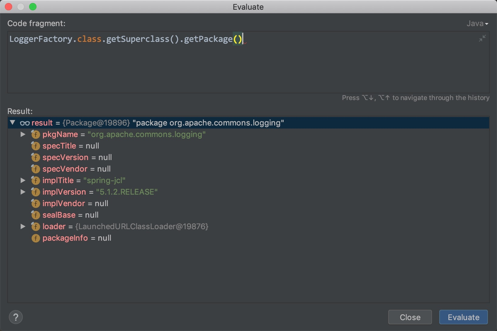
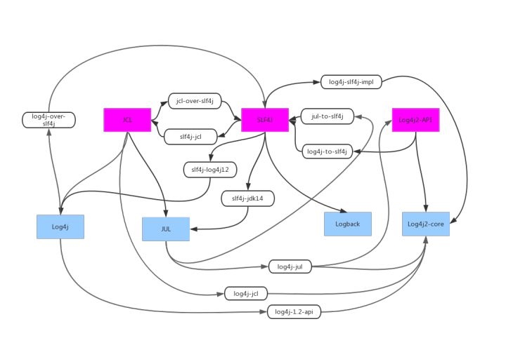

前言
Java 有很多的日志框架可以选择，当同一个项目中出现多种日志框架时就很容易出现日志框架冲突的问题，导致日志打印不出来。本文将以一次典型的日志冲突排查问题为例，提供排查步骤和思路，最后分析日志框架冲突的原因。
一般行文思路都是先讲 Why，再讲 How，这里我颠倒了，因为一般遇到问题的时候我们对问题背后的根本原因是一无所知的，如果我们已经知道问题的原因，那么问题也就迎刃而解了。因此我希望先复现我当时在对日志框架了解不多的情况下排查问题的思路和步骤，如何在面对未知问题找到破题思路是非常重要的技能。
一次典型的日志冲突排查
问题背景
在 A 工程中，日志框架配置选用了 Log4j2，master 分支上日志打印正常，但开发分支增加了代码之后日志打印不出来。项目的依赖中包含了 Log4j2、Logback 等日志框架。
排查思路与过程
排查问题的时候首先必须要有明确的思路，即大胆假设，小心求证，不能像无头苍蝇一样乱试。从问题的现象看，直觉上可以得出几个假设：
- 服务器环境有问题
- 开发分支的 Log4j2 配置有问题
接下来就是验证假设，首先多申请几台机器部署项目分支，发现问题仍然存在，可以排除第一个假设。其次找到另一个工程 B 跟 A 工程对比 Log4j2 的配置，也没有发现明细的差异，可以排除第二个假设。
在已有假设都验证失败的情况下，需要收集更多的信息作出判断，接下来就是要用对照实验收集信息。于是我分别断点了 A 和 B 两个工程，观察它们日志实体的类型是否一致。结果发现两者的日志实体类型不一样，A 的日志实现是 Logback，B 的日志实现是 Log4j2，很明显 A 打印不出日志是因为日志实体不对，但是两者都是用的同一个 LoggerFactory 创建 Logger 的。从对照实验的结果来看，可以得出一个假设：依赖冲突导致了 A 运行时使用日志实体不是 Log4j2。
至此我们已经找到了问题的大致方向，接下来就是要排包。排包一般有两种思路：
- 暴力求解：把所有可能冲突的日志包排掉，一个个试。
- 精准爆破：利用类加载的信息判断运行时加载的具体是哪个 jar
暴力求解的方式太花费时间了，所以我用的第二种方式。
获取日志实体的方式如下：
private static final Logger LOGGER = LoggerFactory
.getLogger(xxx.class);
LoggerFactory 的代码如下：
public abstract class LoggerFactory extends LogFactory {
public static Logger getLogger(Class clazz) {
ClassLoader oldTccl = Thread.currentThread().getContextClassLoader();
try {
Thread.currentThread().setContextClassLoader(LoggerFactory.class.getClassLoader());
return getLogger(getLog(clazz));
} finally {
Thread.currentThread().setContextClassLoader(oldTccl);
}
}
}
从代码上可以发现，getLog方法是来自父类LogFactory，当我去尝试获取LogFactory的实现时候，发现竟然有 3 个 jar 中都有同样包名的LogFactory实现。于是我断点了 A 和 B 工程的代码，用 IDEA 的运行代码功能执行以下命令获取LogFactory的加载信息。

结果发现 B 工程使用是spring-jcl，A 使用的是jcl-over-slf4j，然后排除掉 A 中jcl-over-slf4j，问题解决。
上面的排查过程中，关键的地方有两点：
- 定位到问题的根源是类加载冲突，确定排查方向。
- 通过断点获取冲突类的加载信息，快速定位到冲突的 jar。
为什么日志框架会冲突
问题至此就解决了，但是还有一个更深入的问题没有解决：为什么同时存在多个日志框架的时候就会出现冲突呢？在解决完问题之后，我深入研究了日志框架的历史和设计，发现原来这跟日志框架的实现机制有关系。
日志框架的历史
首先要从日志框架的发展历史开始说起。
- 首先登场是
Java Util Log，简称JUL，是JDK 中自带的 log 功能。虽然是官方自带的，JUL 的使用却不广泛，主要是因为功能比较简单，不好用。 - 然后
Log4j 1.x就登场了：它是 Gülcü 设计实现的日志框架，设计非常优秀，是非常广泛使用的框架。 Commons Logging：简称 JCL，是 Apache 的项目。JCL 是一个 Log Facade，只提供 Log API，不提供实现，用 Adapter 来使用 Log4j 或者 JUL 作为 Log Implementation。目的是统一日志接口规范，适配多种日志实现。SLF4J/Logback：SLF4J(The Simple Logging Facade for Java) 和 Logback 也是 Gülcü 创立的项目，其创立主要是为了提供更高性能的实现。其中，SLF4j 是类似于JCL 的Log Facade，Logback 是类似于Log4j 的 Log Implementation。这老哥觉得 JCL 的接口设计不好，所以重新设计了一套。Log4j2：维护 Log4j 的人为了不让 Log4j 的用户被 SLF4J/Logback 抢走，所以搞出了新的日志框架。Log4j2 和 Log4j1.x 并不兼容，设计上很大程度上模仿了 SLF4J/Logback，性能上也获得了很大的提升。Log4j2 也做了 Facade/Implementation 分离的设计，分成了 log4j-api 和 log4j-core。
至此我们已经有了三个的 Log 接口和四个 Log 实现，果然程序员真的是爱造轮子。出现这么多框架之后，有人开始搞各个框架之间的桥接，你兼容我，我兼容你，如下图所示。

因为很多 jar 使用的日志框架不同，所以经常会出现引入 jar 包之后导致日志类冲突，前面我们排查的那个问题就是因为引入了 jcl-over-slf4j 的桥接包。
动态加载日志实现
前面我们提到日志框架分为日志接口和日志实现，只要我们代码中使用的是日志接口（JCL、SLF4J），我们可以随时替换日志的实现。
SLF4J 加载日志实现的方式
SLF4J 加载日志实现分为两个步骤：
- 获取 ILoggerFactory 日志工厂
- 根据 ILoggerFactory 获取 Logger
SLF4J 要求日志实现 jar 包都要实现 StaticLoggerBinder 这个类，而且要放在指定目录：org/slf4j/impl/StaticLoggerBinder.class，SLF4J 的LoggerFactory会去扫描所有 jar 包中的这个地址，参考下面的代码。
private static String STATIC_LOGGER_BINDER_PATH = "org/slf4j/impl/StaticLoggerBinder.class";
static Set<URL> findPossibleStaticLoggerBinderPathSet() {
LinkedHashSet staticLoggerBinderPathSet = new LinkedHashSet();
//加载所有可能日志工厂类
try {
ClassLoader ioe = LoggerFactory.class.getClassLoader();
Enumeration paths;
if(ioe == null) {
paths = ClassLoader.getSystemResources(STATIC_LOGGER_BINDER_PATH);
} else {
paths = ioe.getResources(STATIC_LOGGER_BINDER_PATH);
}
while(paths.hasMoreElements()) {
URL path = (URL)paths.nextElement();
staticLoggerBinderPathSet.add(path);
}
} catch (IOException var4) {
Util.report("Error getting resources from path", var4);
}
return staticLoggerBinderPathSet;
}
虽然它扫描了多个日志实现，但实际上同名类 JVM 只能存在一个，它这里扫描的目的是为了打印日志告诉用户有多少个日志实现在依赖包中。下面的代码返回的是最终使用的日志实现。
public static ILoggerFactory getILoggerFactory() {
if (INITIALIZATION_STATE == UNINITIALIZED) {
synchronized (LoggerFactory.class) {
if (INITIALIZATION_STATE == UNINITIALIZED) {
INITIALIZATION_STATE = ONGOING_INITIALIZATION;
performInitialization();
}
}
}
switch (INITIALIZATION_STATE) {
case SUCCESSFUL_INITIALIZATION:
//这里通过静态方法返回真正使用的日志工程类
return StaticLoggerBinder.getSingleton().getLoggerFactory();
case NOP_FALLBACK_INITIALIZATION:
return NOP_FALLBACK_FACTORY;
case FAILED_INITIALIZATION:
throw new IllegalStateException(UNSUCCESSFUL_INIT_MSG);
case ONGOING_INITIALIZATION:
// support re-entrant behavior.
// See also http://jira.qos.ch/browse/SLF4J-97
return SUBST_FACTORY;
}
throw new IllegalStateException("Unreachable code");
}
你可能要问了，同时存在多个日志实现类的时候，到底是用的是哪个？答案很简单，因为 SLF4J 利用了静态类来加载日志工程，实际上就是让 JVM 决定使用哪个类：哪个被先加载到 JVM 中就用哪个。为了搞清楚这个问题的答案，我特地去看了URLClassPath加载类的实现，它就是按照 jar 加入到 URLClassPath的顺序遍历扫描，找到第一个符合条件的就返回。
JCL 加载日志实现的方式
相比 SLF4J 比较任性的加载方式（依赖 JVM 加载类的顺序），JCL 提供了更多的配置能力，可以指定使用哪一个日志工程类。
类似的，JCL 也分为两个步骤加载日志实现：
- 获取 LogFactory 日志工厂类
- 根据 LogFactory 获取 Logger
首先是获取 LogFactory：
- 先从系统属性中读取系统属性
System.getProperty("org.apache.commons.logging.LogFactory") - 使用 Java 的 SPI 机制，来搜寻对应的实现：
META-INF/services/org.apache.commons.logging.LogFactory，这里就不对 SPI 进行过多介绍了，简单来说就是搜寻哪些 jar 包中含有搜寻含有上述文件，该文件中指明了对应的 LogFactory 实现 - 从 commons-logging 的配置文件中 commons-logging.properties 寻找
org.apache.commons.logging.LogFactory的值 - 最后还没找到的话，使用默认的
org.apache.commons.logging.impl.LogFactoryImpl
找到 LogFactory 之后就根据 LogFactory 获取 Logger，这个根据不同的 LogFactory 实现有不同的方式。前面我遇到那个问题就是因为类冲突导致使用了 SLJ4J 的 LogFactory ，加载了错误的 Logger。
总结
开发过程中总会遇到奇奇怪怪的问题，有无处下手的感觉时先稳住心态，按照大胆假设，小心求证的方式进行排查，实在没有思路往往是因为基础还不扎实。像这次日志打印不出来的问题，如果了解日志框架的加载实现，很容易就能定位到问题；差一点的像我不了解日志框架的实现，但是我可以根据之前对类加载机制的了解也能解决问题；如果对类加载机制不了解，那基本上是无解了。因此，要把问题当做学习机会，不光要解决问题，还要深挖背后的原理，做好总结，这样才能为解决更多的问题打下扎实基础。